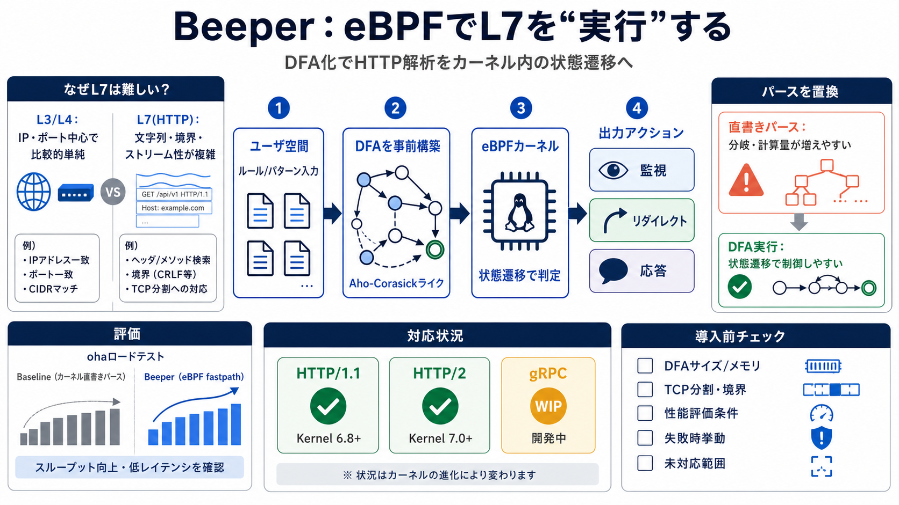

[2605.31084] Enforcing Application-Layer Policies in eBPF
This paper presents Beeline, a fast path for service meshes which can enforce the vast majority of application-layer pol…

Cover
02 / 14
Beeper（BEEline's ParsER）は、eBPFカーネル内でHTTPのアプリケーション層（L7）解析を成立させることを狙った仕組みです。ユーザ空間でやりがちな解析を、DFAの事前構築と状態遷移で置き換えます。
Problem
03 / 14
L7（HTTP/2、gRPCなど）はデータ構造が複雑で、単純なL3/L4のような軽いフィルタでは足りません。さらにカーネル内（eBPF）では実行コストと分岐が制約になり、重いパースは破綻しやすいです。
L3/L4
比較的単純：IP/ポート中心
L7（HTTP）
文字列・境界・ストリーム性が複雑
Metaphor
04 / 14
Beeperはユーザ空間でAho-CorasickライクなDFA（決定性有限オートマトン）を構築し、eBPFでは状態遷移として実行します。複雑な解析を、カーネル内で扱える形の機械に落とし込みます。
1
パターン/ルール入力
2
Aho-CorasickライクDFAを構築
3
eBPFで“遷移”として判定
Architecture
05 / 14
Beeperは解析結果をログするだけでなく、payloadに基づく監視・リダイレクト・カーネルからの応答を想定しています。ユーザ空間との往復を減らし、レイテンシとスループット改善が狙えます。
監視
payloadベースで検出
制御
リダイレクト（方針適用）
応答
カーネル側で返す
Evidence
06 / 14
対応プロトコルと最小カーネル要件が提示されています。HTTP/1.1は最小6.8、HTTP/2は最小7.0で✅、gRPCはWIP（未完）です。
HTTP/1.1
✅ 最小カーネル 6.8
HTTP/2
✅ 最小カーネル 7.0
gRPC
WIP（作業中）
Distinction
07 / 14
eBPFでは複雑なパースをそのまま実行すると重くなったり不可能になったりします。そこでBeeperは、パターン検出をオートマトンとして処理できる形に落とし込み、状態遷移で効率と実装可能性を両立します。
直書きパース
分岐・計算量が増えやすい
DFA実行
状態遷移で判定（より制御しやすい）
Process
08 / 14
例示では、baseline（fastpathなし）と「server accelerated with beeper」を並べて比較し、ohaでロードテストします。fastpathの有無で体感・数値の差を見やすい設計です。
比較軸
fastpathなし（baseline）
比較軸
fastpathあり（Beeper側）
負荷
oha でロードテスト
Enumeration
09 / 14
Beeperで狙えるのは、L7の判定結果に基づくネットワーク挙動の変更です。典型用途は、payloadに基づく監視、リダイレクト、カーネルからの応答です。
i
監視（見張り）
ii
リダイレクト
iii
応答生成
Distinction
10 / 14
筋の良さは、DFA構築で計算量を“eBPFで扱える形”に落とす設計です。一方、READMEが短く、DFAサイズ上限や境界条件、安全性、失敗時挙動が読み取りにくいのが課題です。
強み
HTTP/1.1・HTTP/2の✅と最小カーネルが明示
不足
DFAサイズ/メモリ、TCP分割、性能条件、失敗時挙動が不明
Comparison
11 / 14
Beeperは単なるHTTP解析ツールではなく、eBPF内でL7解析を成立させる構造が中核です。DFA（Aho-Corasickライク）は、eBPFの制約下で実装可能性と効率を両立するために使われます。
Q1
“単なる解析ツール？”→ いいえ（eBPFで実行）
Q2
“なぜDFA？”→ 分岐/計算量を抑えるため
Problem
12 / 14
HTTP/2は最小カーネル7.0で✅ですが、機能範囲（ヘッダやストリーム分割など）は論文・コード確認が必要です。gRPCはWIPで、またfastpathの詳細定義も例側で確認が確実です。
Q3
HTTP/2：環境要件OKでも機能範囲は要確認
Q4
gRPC：WIP（未保証）
Q5
fastpath：定義はexampleで確認
closing
13 / 14
Beeperは“L7をカーネル内で扱う”方向性を、DFA構築→eBPFで状態遷移実行として具体化しています。導入判断は、DFAサイズ制約・プロトコル境界・性能評価条件・失敗時挙動・未対応範囲（gRPC WIP）を精査して行うべきです。
必ず確認
i) DFAサイズ/メモリ ii) TCP分割・境界 iii) 性能条件 iv) 失敗時挙動
計画の前提
i) HTTP/1.1（6.8） ii) HTTP/2（7.0） iii) gRPC（WIP）
This paper presents Beeline, a fast path for service meshes which can enforce the vast majority of application-layer pol…